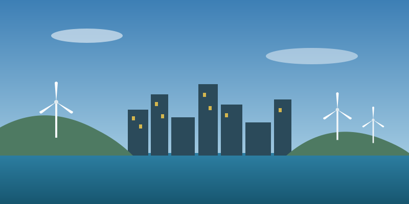

Example: position absolute

Top Left Top Right Centered Bottom Left Bottom RightTry it yourself:
The image box uses position: relative. Each label uses position: absolute with top, bottom, left or right, so it is placed against that box.
position: static and relative
Follows normal flow.
Moved 20px down and 20px right from its normal spot.
z-index stacking
z-index: 1
z-index: 3
z-index: 2
Positioned elements with a higher z-index are drawn on top of those with a lower one.
position: fixed and sticky
The green Back to top button stays in the bottom-right corner of the window while you scroll. That is position: fixed.
The grey section titles stick to the top of the screen while their section is in view, then scroll away with it. That is position: sticky.
Wind turbines turn moving air into electricity. In a smart city, sensors and forecasts help the grid use that power when it is available and store it when it is not.
Rooftop turbines can power lifts and lights. District turbines can supply charging points. Wind farms outside the city can feed the whole network.
Careful siting matters, because buildings make the wind gusty. Smart monitoring keeps turbines safe and efficient.